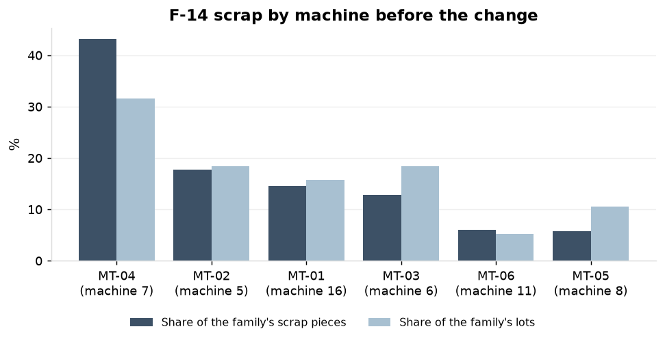
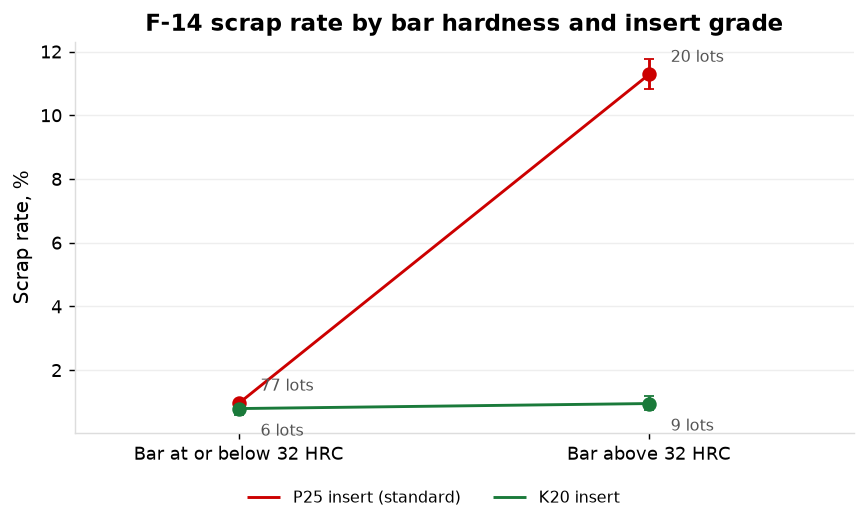
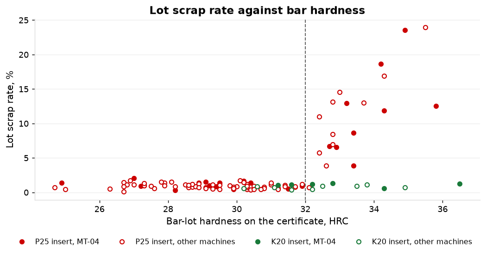
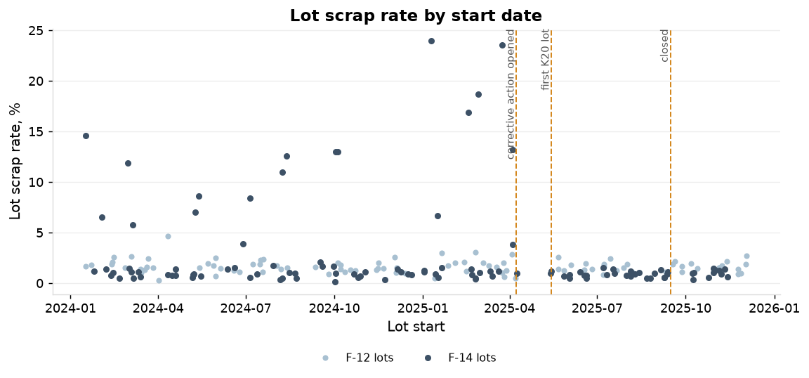
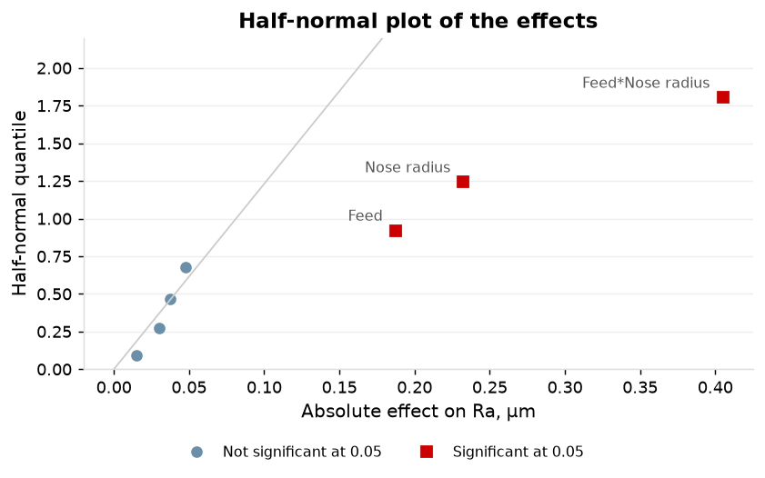
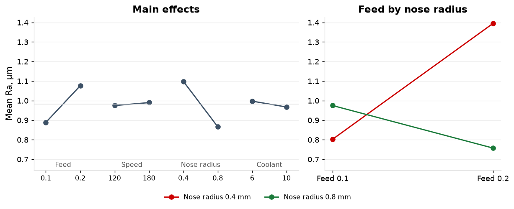
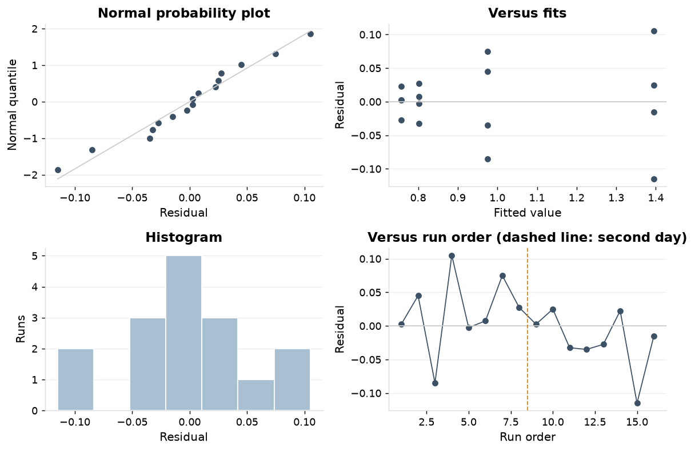
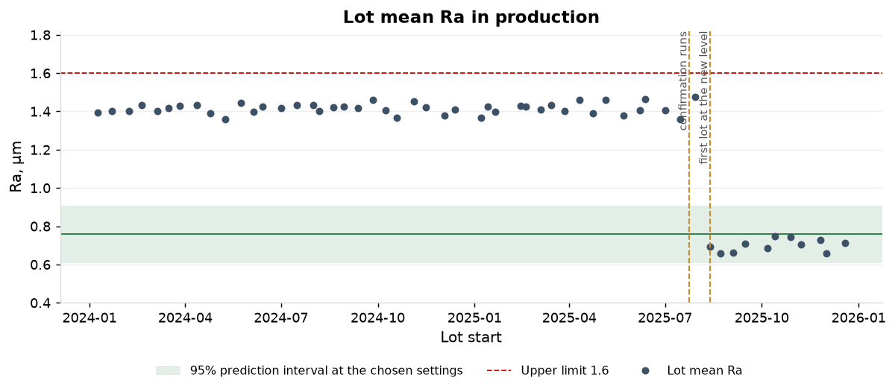

1. The shop's view
MT-04, machine 7 on the scrap report, carried 43% of the family's scrap pieces and 9 of its 19 scrap NCRs before the change, on 32% of the lots. The NCRs name the machine on 10 of 19 and the operator on 6; material is named once.
| Machine (shop no.) | Lots | Share of lots | Scrap pieces | Share | Scrap cost | Share | Scrap NCRs | Share |
|---|---|---|---|---|---|---|---|---|
| MT-04 (7) | 24 | 31.6% | 1,082 | 43.1% | $29,338 | 42.7% | 9 | 47.4% |
| MT-02 (5) | 14 | 18.4% | 446 | 17.8% | $13,484 | 19.6% | 3 | 15.8% |
| MT-01 (16) | 12 | 15.8% | 364 | 14.5% | $10,037 | 14.6% | 1 | 5.3% |
| MT-03 (6) | 14 | 18.4% | 322 | 12.8% | $8,420 | 12.2% | 3 | 15.8% |
| MT-06 (11) | 4 | 5.3% | 150 | 6.0% | $3,791 | 5.5% | 2 | 10.5% |
| MT-05 (8) | 8 | 10.5% | 145 | 5.8% | $3,714 | 5.4% | 1 | 5.3% |
| All | 76 | 2,509 | $68,784 | 19 |

| Cause code as entered | Scrap NCRs | Pieces |
|---|---|---|
| machine | 10 | 694 |
| operator | 6 | 799 |
| (none) | 1 | 149 |
| material | 1 | 68 |
| tooling | 1 | 182 |
2. The comparison by machine
MT-04 scrapped 4.82% against 2.96% on the other five machines. Lot by lot the odds ratio is 1.66 (0.79 to 3.49, p = 0.18) with dispersion 82: the lots differ far more than pieces drawn at one rate would. The piece-level intervals of the Pareto do not overlap (4.55 to 5.11% against 2.81 to 3.12%) because they treat 22,430 pieces as independent. The scrap report supports a difference between machines that the lots do not.
| Machine | Lots | Pieces | Scrap | Rate (95% interval on pieces) |
|---|---|---|---|---|
| MT-01 | 12 | 11,905 | 364 | 3.06% (2.76 to 3.38) |
| MT-02 | 14 | 12,475 | 446 | 3.58% (3.26 to 3.91) |
| MT-03 | 14 | 13,200 | 322 | 2.44% (2.19 to 2.71) |
| MT-04 | 24 | 22,430 | 1,082 | 4.82% (4.55 to 5.11) |
| MT-05 | 8 | 7,305 | 145 | 1.98% (1.68 to 2.32) |
| MT-06 | 4 | 3,290 | 150 | 4.56% (3.89 to 5.31) |
| MT-04 | 24 | 22,430 | 1,082 | 4.82% (4.55 to 5.11) |
| The other five | 52 | 48,175 | 1,427 | 2.96% (2.81 to 3.12) |
3. Lot scrap rate across machines, bar suppliers and hardness
Before the change the machine explains 4.2% of the variance of lot scrap rate (p = 0.69), the bar supplier none, and the bar-lot hardness band 67.1%. Every F-14 lot ran from its own bar lot.
| Factor | Levels | Lots | F | p | Share of variance |
|---|---|---|---|---|---|
| Machine | 6 | 76 | 0.61 | 0.6929 | 4.2% |
| Bar supplier | 2 | 76 | 0.01 | 0.9389 | 0.0% |
| Bar-lot hardness band (above 32 HRC or not) | 2 | 76 | 150.73 | 0.0000 | 67.1% |
4. The regression
With bar-lot hardness, insert grade and their interaction in the model the MT-04 odds ratio is 1.04 (0.83 to 1.30, p = 0.74). Bar above 32 HRC carries an odds ratio of 13.0 on the standard insert, and the K20 insert removes it (interaction odds ratio 0.09). Dispersion falls from 77 to 7.5.
| Model | Term | Lots | Odds ratio (95% interval) | p | Dispersion |
|---|---|---|---|---|---|
| MT-04 alone, lots before the change | MT-04 | 76 | 1.66 (0.79 to 3.49) | 0.178 | 82.1 |
| With hardness, insert and interaction, all lots | MT-04 | 112 | 1.04 (0.83 to 1.30) | 0.740 | 7.5 |
| With hardness, insert and interaction, all lots | Bar above 32 HRC | 112 | 13.03 (10.15 to 16.73) | below 0.001 | 7.5 |
| With hardness, insert and interaction, all lots | Above 32 HRC with the K20 insert | 112 | 0.09 (0.03 to 0.27) | below 0.001 | 7.5 |
5. The mechanism
Lots on bar above 32 HRC run with the standard insert scrapped 11.3% (20 lots); the other three combinations scrapped 0.8 to 1.0%. That one combination explains 69.4% of the between-lot scrap variance of the family; MT-04 explains 2.4%.
| Bar hardness (certificate) | Insert | Lots | of them on MT-04 | Pieces | Scrap | Rate (95% interval) |
|---|---|---|---|---|---|---|
| 32 HRC and below | K20 | 6 | 2 | 5,425 | 43 | 0.79% (0.58 to 1.06) |
| 32 HRC and below | P25 | 77 | 19 | 72,310 | 693 | 0.96% (0.89 to 1.03) |
| above 32 HRC | K20 | 9 | 4 | 7,995 | 76 | 0.95% (0.76 to 1.18) |
| above 32 HRC | P25 | 20 | 9 | 17,720 | 1,999 | 11.28% (10.82 to 11.75) |


6. Why MT-04 carried the scrap
38% of MT-04's lots before the change ran on bar above 32 HRC against 21% on the other five machines. MT-04 ran 22 of its 24 lots on 5 part numbers, whose bar averaged 29.9 to 32.9 HRC; the other part numbers averaged 29.4 HRC.
| Lots | Lots above 32 HRC | Share | Mean certificate hardness | |
|---|---|---|---|---|
| MT-04 | 24 | 9 | 38% | 31.1 HRC |
| The other five machines | 52 | 11 | 21% | 29.9 HRC |
7. The change and its confirmation
The family's scrap rate fell from 3.55% to 0.87% on the 25 lots of the confirmation window (difference 2.68 points, 2.49 to 2.86, p < 0.001) and stands at 0.92% on all 36 lots since. F-12 did not move: 1.72% and 1.60% over the same dates (p = 0.31). CAPA-25-010 was opened on 8 April 2025, the first lot ran the K20 insert on 14 May 2025, and the action was closed on 15 September 2025. No lot above 32 HRC has run the standard insert since.
| Window | Family | Before: lots; pieces; scrap; rate | After: lots; pieces; scrap; rate | Difference, points (95% interval) | p |
|---|---|---|---|---|---|
| confirmation window, to the closure of the corrective action | F-14 | 76; 70,605; 2,509; 3.55% | 25; 22,650; 198; 0.87% | 2.68 (2.49 to 2.86) | below 0.001 |
| confirmation window, to the closure of the corrective action | F-12 | 64; 60,980; 1,048; 1.72% | 17; 15,915; 255; 1.60% | 0.12 (-0.11 to 0.33) | 0.31 |
| all lots after | F-14 | 76; 70,605; 2,509; 3.55% | 36; 32,845; 302; 0.92% | 2.63 (2.46 to 2.80) | below 0.001 |
| all lots after | F-12 | 64; 60,980; 1,048; 1.72% | 32; 30,660; 503; 1.64% | 0.08 (-0.10 to 0.25) | 0.39 |

8. The cost
Scrap on the family cost $68,784 before the change, $4,196 a month, of which $57,920 fell on the 20 lots above 32 HRC on the standard insert. Since the change it has cost $5,817, $766 a month.
| Period | Lots | Scrap pieces | Scrap cost | Per lot | Per month | On lots above 32 HRC with the standard insert |
|---|---|---|---|---|---|---|
| before the change | 76 | 2,509 | $68,784 | $905 | $4,196 | $57,920 |
| after the change | 36 | 302 | $5,817 | $162 | $766 | $0 |
9. The design
Sections 9 to 15 cover the designed experiment on surface finish and production since the change of settings.
Sixteen runs on MT-02 on 15 July 2025 and the day after: a half fraction of four factors at two levels (D = ABC), two replicates, run order randomized. The design is resolution IV: feed by nose radius is aliased with speed by coolant.
| Factor | Low | High |
|---|---|---|
| A Feed, mm/rev | 0.1 | 0.2 |
| B Surface speed, m/min | 120 | 180 |
| C Insert nose radius, mm | 0.4 | 0.8 |
| D Coolant concentration, % | 6 | 10 |
10. Effects
Feed and nose radius interact: effect -0.405 µm (p < 0.001), 1.7 times the largest main effect, nose radius at -0.232. Feed is +0.187. Speed (+0.015, p = 0.61), coolant (-0.030, p = 0.32) and the other two interaction pairs are not significant.
| Term | Effect | Coef | SE Coef | T-Value | P-Value | Aliased with |
|---|---|---|---|---|---|---|
| Constant | +0.9825 | 0.0140 | 70.02 | 0.000 | ||
| Feed | +0.1875 | +0.0937 | 0.0140 | 6.68 | 0.000 | BCD |
| Speed | +0.0150 | +0.0075 | 0.0140 | 0.53 | 0.608 | ACD |
| Nose radius | -0.2325 | -0.1162 | 0.0140 | -8.29 | 0.000 | ABD |
| Coolant | -0.0300 | -0.0150 | 0.0140 | -1.07 | 0.316 | ABC |
| Feed*Speed | +0.0475 | +0.0238 | 0.0140 | 1.69 | 0.129 | CD |
| Feed*Nose radius | -0.4050 | -0.2025 | 0.0140 | -14.43 | 0.000 | BD |
| Feed*Coolant | -0.0375 | -0.0188 | 0.0140 | -1.34 | 0.218 | BC |

11. The reduced model
Feed, nose radius and their interaction explain 94.8% of the variation in Ra (R-sq adjusted), with S = 0.061 µm and no lack of fit (p = 0.28). The feed effect is +0.59 µm at the 0.4 mm radius and -0.22 µm at 0.8 mm: it reverses.
| Source | DF | SS | MS | F | P |
|---|---|---|---|---|---|
| Regression (Feed, Nose radius, Feed*Nose radius) | 3 | 1.01295 | 0.33765 | 91.36 | 0.000 |
| Residual error | 12 | 0.04435 | 0.00370 | ||
| Lack of fit | 4 | 0.01915 | 0.00479 | 1.52 | 0.284 |
| Pure error | 8 | 0.02520 | 0.00315 | ||
| Total | 15 | 1.05730 |

12. Residuals
Normality (p = 0.61) and run order (p = 0.15) are clean; the spread of the residuals rises with the fitted value (p = 0.022); the two days differ by 0.044 µm in mean residual and the design did not block on day. The prediction interval below is the constant-variance interval of the model.

13. The prediction and the confirmation
At feed 0.2 mm/rev with the 0.8 mm nose radius the model predicts Ra 0.76 µm (0.61 to 0.91) against 1.40 µm at the settings before. The four confirmation runs of 24 July 2025 gave 0.73, 0.74, 0.73, 0.68: 4 of 4 inside the interval, mean 0.72.
| Settings | Predicted Ra | 95% prediction interval | 95% confidence interval of the mean |
|---|---|---|---|
| Before: feed 0.20 mm/rev; speed 120 m/min; nose radius 0.4 mm; coolant 6% | 1.395 | 1.247 to 1.543 | 1.329 to 1.461 |
| Chosen: feed 0.2 mm/rev; speed 120 m/min; nose radius 0.8 mm; coolant 6% | 0.758 | 0.609 to 0.906 | 0.691 to 0.824 |
14. The alias check
The interaction is feed by nose radius, not speed by coolant. The confirmation runs lie in the half fraction, where the two take the same sign and cannot be told apart. The settings before the change lie outside it: the model gives 1.395 µm there if the interaction is feed by nose radius and 0.990 if it is speed by coolant. 44 production lots at those settings ran at 1.415.
| Value | |
|---|---|
| Speed main effect | +0.0150, p = 0.61 |
| Coolant main effect | -0.0300, p = 0.32 |
| Chosen settings: in the half fraction | yes; the two interactions take the same sign |
| Settings before: in the half fraction | no; the two interactions take opposite signs |
| Ra at the settings before if the interaction is feed by nose radius | 1.395 |
| Ra at the settings before if the interaction is speed by coolant | 0.990 |
| Production Ra at the settings before, 44 lots | 1.415 |
15. Production after the change
The 11 lots run since 12 August 2025 average 0.700 µm against the predicted 0.758: every lot below it, all 11 inside the prediction interval and 10 of 11 within 0.1 µm; the confirmation runs averaged 0.720. Against the upper limit of 1.6 µm the index was 0.96 on the 44 lots before (2,006 ppm expected above the limit, 9 readings recorded above it) and is 5.65 on the 11 lots since.
| Period | Lots | Readings | Mean Ra | sd | Fitted distribution | Median | 99.865th percentile | Index | Expected ppm above the limit | Readings above the limit |
|---|---|---|---|---|---|---|---|---|---|---|
| Before the change | 44 | 5,595 | 1.415 | 0.064 | folded normal | 1.415 | 1.608 | 0.96 | 2,006 | 9 |
| After the change | 11 | 1,380 | 0.701 | 0.053 | folded normal | 0.701 | 0.861 | 5.65 | 0 | 0 |

Recommendation
- Keep the K20 insert on bar above 32 HRC and the receiving hardness check on every F-14 lot, as the corrective action states.
- Record the insert grade on every job on the 4140 families.
- Add material hardness to the NCR cause-code list.
- Specify 4140 bar for the family at 32 HRC or below, or price the K20 insert into lots that arrive above it.
- Report F-14 scrap by bar hardness band on the monthly scrap report in place of the machine Pareto.
- Run C-16180-28 at feed 0.20 mm/rev with the 0.8 mm nose radius, speed and coolant at the current settings.
- Write the settings into the routing and the setup sheet so that the lot record carries them.
- Hold the roughness tester's calibration and the sampling plan on the part as they are.
- Use the Ra mean of each lot against the prediction interval on the SPC chart as the control.
Target: Family scrap rate below 1.0% on every bar lot, held through 2026.
Target: Ra at or below 0.76 µm with the index against the 1.6 µm limit at or above 1.33, held through 2026.
| Action | Owner | When |
|---|---|---|
| K20 insert on bar above 32 HRC; bar hardness checked at receiving on every F-14 lot; insert grade recorded on the job (CAPA-25-010) | Quality engineer E-0161 | opened 8 April 2025; first K20 lot 14 May 2025; closed 15 September 2025 |
| Insert grade recorded on every job on the other 4140 families | Production manager | March 2026 |
| 4140 bar for the family specified at 32 HRC or below, or the K20 insert priced into lots above it | Purchasing manager | March 2026 |
| Material hardness added to the NCR cause-code list; F-14 scrap by hardness band on the monthly scrap report | Quality manager | March 2026 |
| Feed 0.20 mm/rev and 0.8 mm nose radius written into the routing and the setup sheet | Manufacturing engineer | in production from 12 August 2025; documents March 2026 |
| Lot mean Ra against the prediction interval as the control limit on the SPC chart | Quality engineer | March 2026 |
Follow-up: Scrap rate by bar hardness band on the monthly report. The next bar lot above 32 HRC run on the standard insert, if any, flagged at release. Lot mean Ra against the interval on every lot. A further experiment on the two aliased pairs if a customer asks for the speed and coolant effects.
Method and data
Root cause of scrap on family F-14
Lot scrap is the scrap transactions of the lot in pieces over the lot quantity. Regression: binomial logit on lot scrap with lot quantity as exposure; standard errors scaled by the Pearson dispersion (quasi-likelihood). Share of between-lot variance: R squared of the lot scrap rate on one indicator, 112 lots. Before and after: score test of two proportions with the Newcombe interval. The split is the start of the first lot run on the K20 insert; the corrective action record supplies the dates. Bar hardness is the certificate value; on the 80 lots with a receiving check the two differ by at most 1.1 HRC and no lot changes band. Every F-14 lot ran from its own bar lot, so the bar lot enters by its supplier and its hardness band. Scrap cost is at standard cost. 112 lots, 103,450 pieces.
Designed experiment on surface finish
Design: two-level half fraction of four factors, D = ABC, two replicates, 16 runs, resolution IV; main effects are aliased with three-factor interactions and each two-factor interaction with one other. Model: least squares on coded levels; the reduced model keeps the terms significant at 0.05 with the main effects of a kept interaction; S = 0.061 on 12 degrees of freedom. Prediction interval: 95%, for a single run at the settings, constant variance. Confirmation: four further runs at the chosen settings. Production: lot means of the five-reading subgroups on C-16180-28. The lot record carries no cutting settings; the change is dated at the first lot at the new level, 12 August 2025, and 1 lot started after the confirmation runs at the old level (29 July 2025, 1.47 µm). Capability: percentile method on the distribution fitted to the readings, index from the median and the 99.865th percentile against the upper limit, as in Measurement systems and process capability.
Appendix
| Model | Term | Lots | Coefficient | se | p | Odds ratio (95% interval) | Dispersion |
|---|---|---|---|---|---|---|---|
| machine alone, before the change | MT-04 | 76 | +0.507 | 0.373 | 0.1780 | 1.66 (0.79 to 3.49) | 82.1 |
| machine alone, all lots | MT-04 | 112 | +0.507 | 0.340 | 0.1384 | 1.66 (0.85 to 3.26) | 76.5 |
| machine with hardness band, insert grade and their interaction, all lots | MT-04 | 112 | +0.037 | 0.112 | 0.7404 | 1.04 (0.83 to 1.30) | 7.5 |
| machine with hardness band, insert grade and their interaction, all lots | Bar above 32 HRC | 112 | +2.567 | 0.126 | 0.0000 | 13.03 (10.15 to 16.73) | 7.5 |
| machine with hardness band, insert grade and their interaction, all lots | K20 insert | 112 | -0.196 | 0.434 | 0.6519 | 0.82 (0.35 to 1.94) | 7.5 |
| machine with hardness band, insert grade and their interaction, all lots | Above 32 HRC with the K20 insert | 112 | -2.387 | 0.541 | 0.0000 | 0.09 (0.03 to 0.27) | 7.5 |
| Part | Lots before the change | on MT-04 | Mean certificate hardness, HRC | Lots above 32 HRC |
|---|---|---|---|---|
| P-13317-A | 7 | 7 | 29.9 | 1 |
| P-13328-A | 6 | 5 | 31.8 | 2 |
| P-13350-A | 6 | 4 | 31.9 | 3 |
| P-13307-B | 6 | 3 | 31.9 | 4 |
| P-13321-A | 6 | 3 | 32.9 | 4 |
| P-13403-A | 4 | 1 | 29.2 | 1 |
| P-13483-A | 5 | 1 | 28.4 | 0 |
| P-13357-A | 5 | 0 | 29.3 | 0 |
| P-13380-B | 5 | 0 | 28.0 | 0 |
| P-13369-A | 5 | 0 | 30.3 | 1 |
| P-13431-A | 6 | 0 | 29.7 | 1 |
| P-13447-D | 6 | 0 | 29.8 | 1 |
| P-13458-B | 5 | 0 | 30.4 | 1 |
| P-13502-C | 4 | 0 | 29.2 | 1 |
| Value | |
|---|---|
| Lots with both values | 80 of 112 |
| Certificate minus receiving check, mean; sd | -0.01; 0.47 HRC |
| Largest difference | 1.1 HRC |
| Lots whose band differs between the two | 0 |
| Corrective action | Opened | Closed | Source | Subject |
|---|---|---|---|---|
| CAPA-25-003 | 2025-01-20 | 2025-03-24 | NCR-25-0011, lot L25-0023 | inspection frequency increased on the characteristic; reaction plan posted |
| CAPA-25-006 | 2025-01-29 | 2025-05-28 | NCR-25-0028, lot L24-1197 | operator retrained on gauge use; work instruction revised |
| CAPA-25-011 | 2025-04-11 | 2025-06-30 | NCR-25-0098, lot L25-0317 | supplier corrective action requested; receiving sample tightened for three lots |
| CAPA-25-015 | 2025-05-14 | 2025-07-01 | CC-25-010, lot L25-0185 | deburr step added to the routing; visual standard issued |
| CAPA-25-017 | 2025-05-29 | 2025-09-15 | CC-25-016, lot L25-0247 | gauge replaced; affected lots re-inspected |
| Factor | Levels | Lots | F | p | Share of variance |
|---|---|---|---|---|---|
| Machine | 6 | 112 | 0.65 | 0.6606 | 3.0% |
| Bar supplier | 2 | 112 | 0.01 | 0.9384 | 0.0% |
| Bar-lot hardness band (above 32 HRC or not) | 2 | 112 | 83.69 | 0.0000 | 43.2% |
| Insert grade | 2 | 112 | 2.82 | 0.0961 | 2.5% |
| Std order | Run order | Date | Feed | Speed | Nose radius | Coolant | Ra | Fit | Residual |
|---|---|---|---|---|---|---|---|---|---|
| 1 | 8 | 2025-07-15 | 0.1 | 120 | 0.4 | 6 | 0.83 | 0.8025 | +0.0275 |
| 2 | 15 | 2025-07-16 | 0.2 | 120 | 0.4 | 10 | 1.28 | 1.3950 | -0.1150 |
| 3 | 11 | 2025-07-16 | 0.1 | 180 | 0.4 | 10 | 0.77 | 0.8025 | -0.0325 |
| 4 | 10 | 2025-07-16 | 0.2 | 180 | 0.4 | 6 | 1.42 | 1.3950 | +0.0250 |
| 5 | 12 | 2025-07-16 | 0.1 | 120 | 0.8 | 10 | 0.94 | 0.9750 | -0.0350 |
| 6 | 1 | 2025-07-15 | 0.2 | 120 | 0.8 | 6 | 0.76 | 0.7575 | +0.0025 |
| 7 | 2 | 2025-07-15 | 0.1 | 180 | 0.8 | 6 | 1.02 | 0.9750 | +0.0450 |
| 8 | 14 | 2025-07-16 | 0.2 | 180 | 0.8 | 10 | 0.78 | 0.7575 | +0.0225 |
| 9 | 5 | 2025-07-15 | 0.1 | 120 | 0.4 | 6 | 0.80 | 0.8025 | -0.0025 |
| 10 | 16 | 2025-07-16 | 0.2 | 120 | 0.4 | 10 | 1.38 | 1.3950 | -0.0150 |
| 11 | 6 | 2025-07-15 | 0.1 | 180 | 0.4 | 10 | 0.81 | 0.8025 | +0.0075 |
| 12 | 4 | 2025-07-15 | 0.2 | 180 | 0.4 | 6 | 1.50 | 1.3950 | +0.1050 |
| 13 | 7 | 2025-07-15 | 0.1 | 120 | 0.8 | 10 | 1.05 | 0.9750 | +0.0750 |
| 14 | 9 | 2025-07-16 | 0.2 | 120 | 0.8 | 6 | 0.76 | 0.7575 | +0.0025 |
| 15 | 3 | 2025-07-15 | 0.1 | 180 | 0.8 | 6 | 0.89 | 0.9750 | -0.0850 |
| 16 | 13 | 2025-07-16 | 0.2 | 180 | 0.8 | 10 | 0.73 | 0.7575 | -0.0275 |
| Term | Effect | Coef | SE Coef | T-Value | P-Value | Aliased with |
|---|---|---|---|---|---|---|
| Constant | +0.9825 | 0.0152 | 64.65 | 0.000 | ||
| Feed | +0.1875 | +0.0937 | 0.0152 | 6.17 | 0.000 | BCD |
| Nose radius | -0.2325 | -0.1163 | 0.0152 | -7.65 | 0.000 | ABD |
| Feed*Nose radius | -0.4050 | -0.2025 | 0.0152 | -13.32 | 0.000 | BD |
| Lot | Start | Subgroups | Mean Ra | Difference from the prediction | Within 0.1 |
|---|---|---|---|---|---|
| L25-0751 | 2025-08-12 | 19 | 0.693 | -0.065 | yes |
| L25-0786 | 2025-08-22 | 21 | 0.657 | -0.101 | no |
| L25-0830 | 2025-09-03 | 28 | 0.664 | -0.094 | yes |
| L25-0874 | 2025-09-15 | 22 | 0.710 | -0.048 | yes |
| L25-0956 | 2025-10-06 | 26 | 0.685 | -0.072 | yes |
| L25-0980 | 2025-10-13 | 26 | 0.747 | -0.011 | yes |
| L25-1054 | 2025-10-28 | 28 | 0.742 | -0.016 | yes |
| L25-1103 | 2025-11-07 | 26 | 0.706 | -0.051 | yes |
| L25-1166 | 2025-11-25 | 28 | 0.730 | -0.028 | yes |
| L25-1174 | 2025-12-01 | 26 | 0.658 | -0.099 | yes |
| L25-1192 | 2025-12-18 | 26 | 0.713 | -0.045 | yes |
| Check | Result |
|---|---|
| Normality, Anderson-Darling | A-sq 0.276, p = 0.609 |
| Residual on run order, slope | -0.0043 per run, p = 0.146; Durbin-Watson 2.46 |
| Mean residual by day | 2025-07-15: +0.0219; 2025-07-16: -0.0219 |
| Absolute residual on fitted value, slope | +0.0794, p = 0.022 |
| Largest standardized residual | 2.18 |